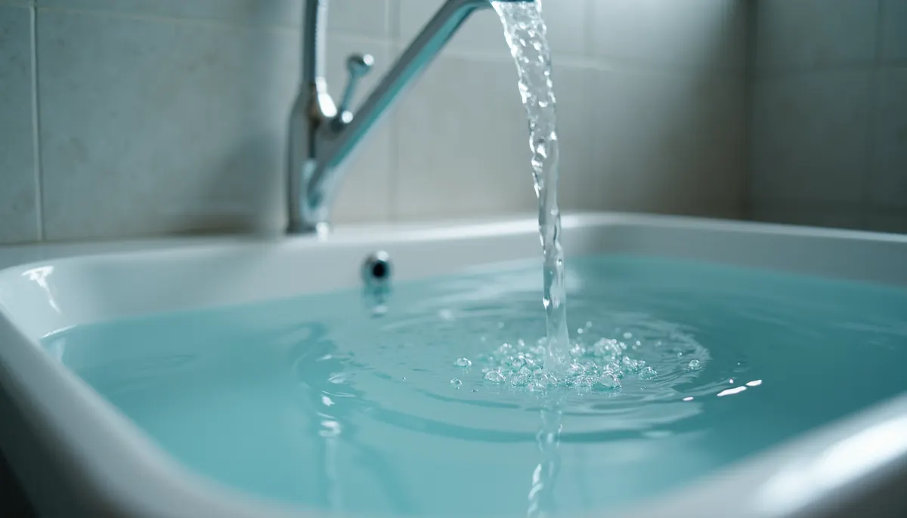
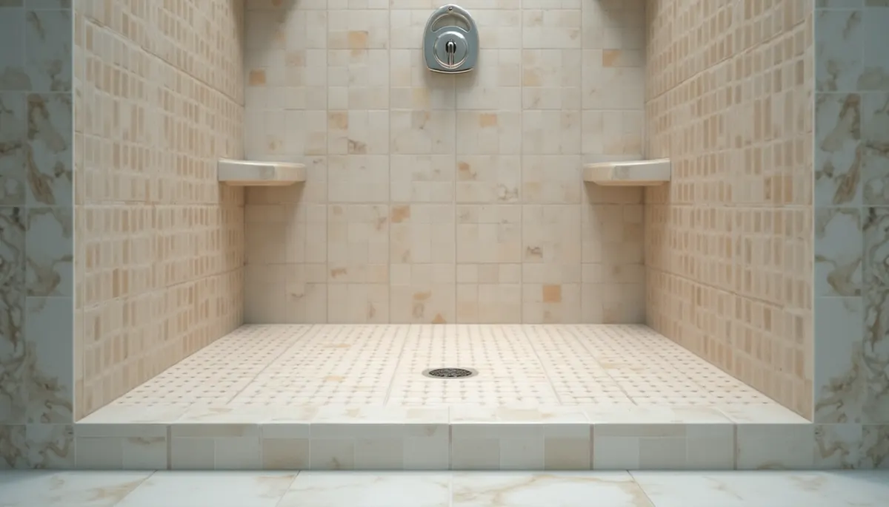
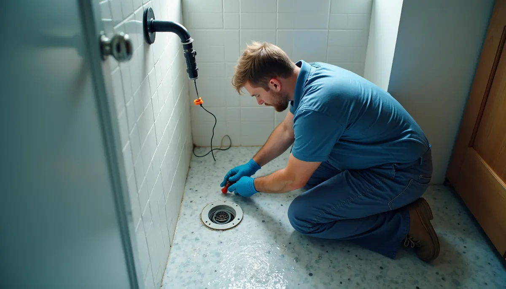

A stunning tile shower can elevate the look and feel of your bathroom. The vibrant tiles and fresh grout can create a luxurious oasis in your home. However, behind this beautiful facade lies a crucial element: the shower pan's waterproofing. Neglecting to perform a flood test can turn your serene shower experience into a costly headache.
At Angle Stop Plumbing, we emphasize the necessity of having a qualified plumber perform a comprehensive flood test on your new tile shower base before any tiles are laid.
What is a Shower Base Flood Test?
A flood test is a vital check for the waterproof integrity of your shower pan. After installing the waterproofing membrane, whether it's a shower liner or a liquid-applied membrane, a professional plumber will take the following steps:
- Securely Plug the Drain: A mechanical or pneumatic plug ensures a watertight seal in the drainpipe.
- Fill the Pan with Water: Water is introduced to the shower pan, typically a couple of inches deep, or to the height specified by local plumbing codes, which is usually just below the curb. This water should come from an external source, not the shower head, to verify that only the pan's waterproofing is tested.
- Monitor the Water Level: The water is left to sit for 24 to 48 hours. The plumber will mark the water level and check for any drop.

The High Cost of Skipping This Simple Step
You may question why this test holds such significance, especially with a confident tile contractor. The reality is that fixing a leak after the tiles are in place is a complex and expensive job.
Consider these risks that flood testing helps mitigate:
- Catastrophic Water Damage and Structural Repairs: A leak in the shower pan can lead to severe water damage, impacting the surrounding walls, floors, and even the foundation. Repair costs can skyrocket, often exceeding $5,000 or more depending on the extent of the damage.
- Mold and Mildew Growth: Hidden leaks can foster mold and mildew, leading to health risks and further structural damage. The CDC reports that over 4.6 million children in the U.S. suffer from asthma, and mold exposure can exacerbate these conditions.
- Increased Utility Bills: A slow leak may not be perceptible at first, but it can gradually inflate your water bills. Homeowners can experience up to a 10% increase in water costs due to unnoticed leaks. Investing in a flood test can prevent this unnecessary expense.

Peace of Mind with Professional Help
While the idea of skipping the flood test to save time or money might be tempting, the long-term advantages far outweigh quick savings. Engaging a professional plumber like Angle Stop Plumbing ensures the test is executed correctly and thoroughly. Their expertise can uncover potential problems that a DIY approach might overlook.
Additionally, professional plumbers can advise on the most effective waterproofing materials and methods tailored to your specific shower design. This knowledge not only guarantees a secure installation but also safeguards against future complications.
Local Codes and Regulations
It's essential to consider local plumbing codes and regulations. Many jurisdictions require a flood test as part of the building permit process. Non-compliance can lead to fines or issues when selling your home later on.
By ensuring your shower base passes the flood test, you protect your investment and meet local requirements, enhancing your home’s safety and marketability.

Final Thoughts
Flood testing your new tile shower base is an essential step in remodeling. Skipping this crucial test can lead to severe consequences. By investing in a flood test by Angle Stop Plumbing, you effectively safeguard your home against water damage, mold growth, and high repair costs in the future.
At Angle Stop Plumbing, we understand the importance of quality and reassurance. Rely on our professional team to conduct a thorough flood test on your shower base, ensuring your dream bathroom is a reality for years to come. Avoid small oversights becoming significant problems—schedule your flood test today!